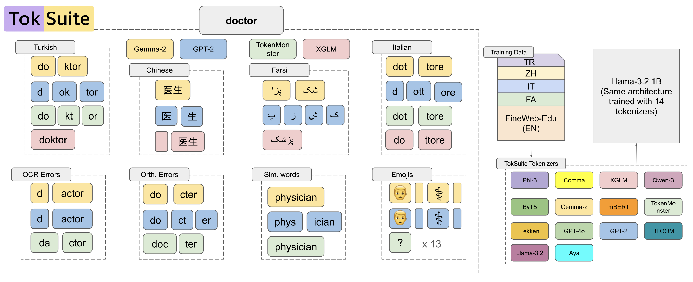
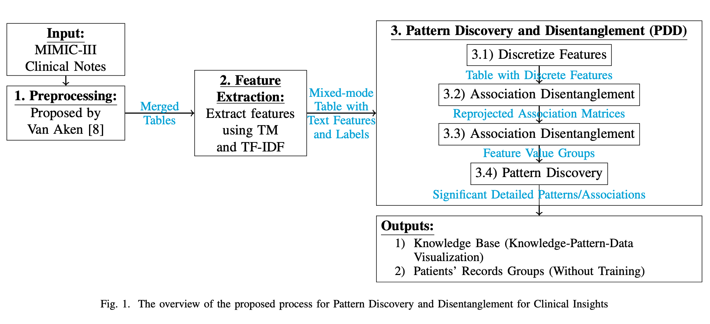

TokSuite: Measuring the Impact of Tokenizer Choice on Language Model Behavior
ICML 2026 (Spotlight)
2025
Research papers and academic publications.
For the full list, visit my Google Scholar page.

ICML 2026 (Spotlight)

IEEE EMBS International Conference on Biomedical and Health Informatics (BHI), 2023